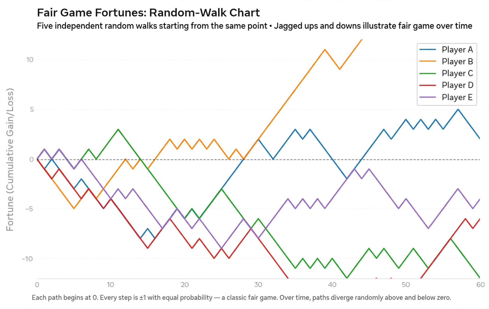

Martingale (probability theory)
In probability theory, a martingale is a sequence of random variables (i.e., a stochastic process) for which, at a particular time, the conditional expectation of the next value in the sequence is equal to the present value, regardless of all prior values.

The concept was introduced by Paul Lévy in 1934 and developed by Joseph Doob; the name derives from a class of betting strategies that originated in 18th-century France, in which a gambler doubles the stake after each loss.
Definition
A discrete-time stochastic process X1, X2, … is a martingale with respect to a filtration if for all n:
- E(|Xn|) < ∞, and
- E(Xn+1 | X1, …, Xn) = Xn.
A process whose conditional expectation is at least the present value is a submartingale; one whose conditional expectation is at most the present value is a supermartingale. The canonical example is a fair coin-flipping game: a gambler's fortune over time is a martingale, since the game is fair.
Key results
Doob's optional stopping theorem states that, under suitable conditions, the expected value of a martingale at a stopping time equals its initial value — formalising the fact that no betting system can beat a fair game. Doob's martingale convergence theorem guarantees that a submartingale bounded in L¹ converges almost surely. Martingales are foundational in modern stochastic calculus, financial mathematics (where discounted asset prices are martingales under a risk-neutral measure), and the theory of Brownian motion, which is a continuous-time martingale.
Examples
- The fortune of a gambler in a fair game.
- A symmetric random walk.
- The likelihood ratio process in sequential statistical testing.
- The posterior mean of a parameter in Bayesian statistics, as data accumulate.
- Pólya's urn: the proportion of balls of a given colour is a martingale.
See also
- Optional stopping theorem
- Stochastic process
- Brownian motion
- Doob's martingale convergence theorems
- Martingale (betting system)
References
Doob, J. L. (1953). Stochastic Processes. Wiley.
Williams, David (1991). Probability with Martingales. Cambridge University Press.